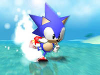
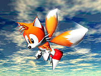
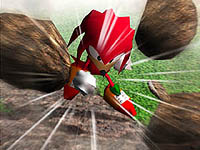
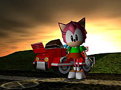
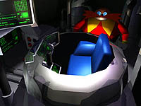
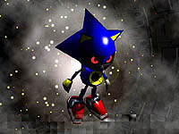
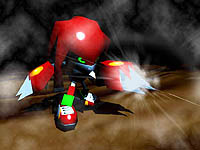
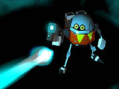
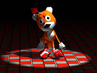
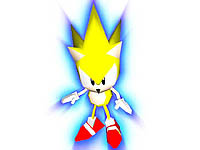

|
Base Characters
These are the characters that appear from the beginning. The Grand Prix mode is contested by these five characters.
|
Sonic the Hedgehog
|

|
The familiar protagonist. His speed is the highest amongst all of the characters.
However, the acceleration and grip performance are inferior, so practice is required.
He can curl up and spin-dash to achieve even greater speed.
He can also jump twice, so he can jump over large obstacles such as rivers.
|
Strategies
Make sure to do a successful spin dash at the start.
Avoid deccelaration as much as possible, and use the L and R buttons for smooth cornering.
You can find unexpected shortcuts by jumping two steps.
|
Miles "Tails" Prower
|
| 
|
He admires Sonic, and is always by his side.
His maximum speed is inferior, but other abilities are relatively high.
Like Sonic, he can curl up and spin dash.
He can also take flight by spinning his two tails, allowing him to take bold shortcuts.
|
Strategies
Make sure to do a successful spin dash at the start.
Flight time is surprisingly short. Try to land as often as possible.
Find a route that utilizes Tails' propeller flight.
|
Knuckles the Echidna
|
| 
|
Sonic's rival.
A well-balanced character in all abilities.
Like Sonic and Tails, he can curl up and spin dash.
He can also glide through the air, and if he glides from a high place, he can stay aloft longer than Tails.
|
Strategies
Make sure to do a successful spin dash at the start.
Glide from high places. Particularly useful on roads with ups and downs.
Higher turning speed enables more stable cornering than Sonic.
|
Amy Rose
|
| 
|
The only female character.
She participates in races in an all-purpose car that Tails had modified for her.
Her top speed is low, but acceleration is good and the character is suitable for beginners.
Her car is all-purpose, thus, it can travel on water.
If you use a Turbo Dash, you can go at high speed for a certain period of time.
|
Strategies
The Turbo Dash is required at the start.
You can't win the race by driving on the ground. Take a daring shortcut through the water.
The use of the Turbo Dash is the decisive factor in the race. Do not use it unecessarily, else you'll wind up losing time.
|
Dr. Robotnik
|
| 
|
An evil scientific genius. He participates in the game by riding the familiar Egg Mobile.
Also, because it floats in the air, it has very high turning speed and can fly above water.
Robotnik can throw bombs, so he can also attack other players.
When you win all five courses in Grand Prix mode, you can select the character on the character select screen.
|
Strategies
Be careful not to turn too much, because the turning speed is very high.
Make full use of your water flight capabilities.
Press the Z button to get a better view of the course ahead.
|
|
Hidden Characters
These are characters that appear when certain conditions are met.
If you use them well, you'll become a powerful player.
|
Metal Sonic
|
| 
|
A secret weapon developed by Robotnik in order to surpass Sonic's power and speed.
He has the same top speed as Sonic, but his acceleration is superior to Sonic's.
However, due to it's overwhelming power, its turning ability is inferior, so it requires a great deal of practice to control it.
|
Unlock Conditions
Collect five tokens in the Grand Prix mode in the Resort Island course. You need to finish in the top four, and then you will be able to battle Metal Sonic.
If you win the match, you'll unlock Metal Sonic.
Strategies
Turning speed is low. If you can't turn, don't hesitate to slow down.
If you have enough momentum, you can run on water. Don't panic if you fall into the water.
He can't double jump, but he can do a better jump than Sonic.
|
Metal Knuckles
|
| 
|
Like Sonic, Robotnik has prepared a secret weapon to defeat Knuckles, who is a hindrance to him
Since it uses Metal Sonic's power unit, it has excellent top speed and acceleration,
and like Knuckles, it can glide from high places.
|
Unlock Conditions
Collect five tokens in the Grand Prix mode in the Reactive Factory course. You need to finish in the top four, and then you will be able to battle Metal Knuckles.
If you win the match, you'll unlock Metal Knuckles.
Strategies
Turning speed is low. If you can't turn, don't hesitate to slow down.
If you have enough momentum, you can run on water. Don't panic if you fall into the water.
Glide from a high place.
|
Egg Robo
|
| 
|
メタルをも凌駕する最強のロボットを目指してエッグマンが制作したロボット。
しかし、空気抵抗を無視したコミカルなボディのおかげで、当初予定していた実力は発揮できず…。
それでもメタルソニックに匹敵するスピード力と、エッグマン譲りの攻撃力を誇る。
|
【出現条件】
グランプリモードの"ＲＥＧＡＬ ＲＵＩＮ"でトークンを５枚集め、４位以内でゴールするとエッグマンロボとの一騎打ちが始まる。
この試合に勝利すると、キャラセレクト画面で選択可能になる。
攻略のポイント
○ 旋回能力が低い。ＬＲボタンを有効に使ってコーナーを切り抜けよう。
○ 水上ではイッキに減速してしまう。急いで地上に戻ろう。
○ 体がでかいエッグマンロボ。コースの先が見え難いときは、Ｚボタンを押して視点を変えよう。
|
テイルスドール
|
| 
|
ソニックを油断させ、攻撃するために作られたエッグマン苦肉の策。
頭部に動力装置を埋め込み、それ以外は単なるぬいぐるみという貧弱な姿をしているが、軽量設計のためレースではかなりの実力を発揮する。
また、長時間空中を浮遊する事も出来る。
|
【出現条件】
グランプリモードの"ＲＡＤＩＣＡＬ ＣＩＴＹ"でトークンを５枚集め、４位以内でゴールするとテイルスドールとの一騎打ちが始まる。
この試合に勝利すると、キャラセレクト画面で選択可能になる。
攻略のポイント
○ フワフワした操作感覚に慣れよう。
○ 水上でもまったく減速することなく走る？ことができる唯一のキャラ。
○ ジャンプボタンを押し続ければ、浮遊し続ける事ができる。
|
スーパーソニック
|
| 
|
カオスエメラルドのパワーによって、潜在能力が引き出された最強のソニック。
圧倒的な加速力と最高速を誇る、まさに最強最速のキャラクター。
|
【出現条件】
グランプリモードの"ＲＡＤＩＡＮＴ ＥＭＥＲＡＬＤ"を除いた４つのコースで、７つのカオスエメラルドを集めると、キャラセレクト画面で選択可能になる。
ただしカオスエメラルドは、レースで１位を取らないと入手できない。
攻略のポイント
○ とにかくスピードが速い。まずはその速さに慣れること。
○ 全てにおいて優れたスーパーソニックだが、最速時のコーナーリングは困難。
○ 最速ゆえに、少しのコントロールミスが致命的となる。不安な時は減速しよう。
|